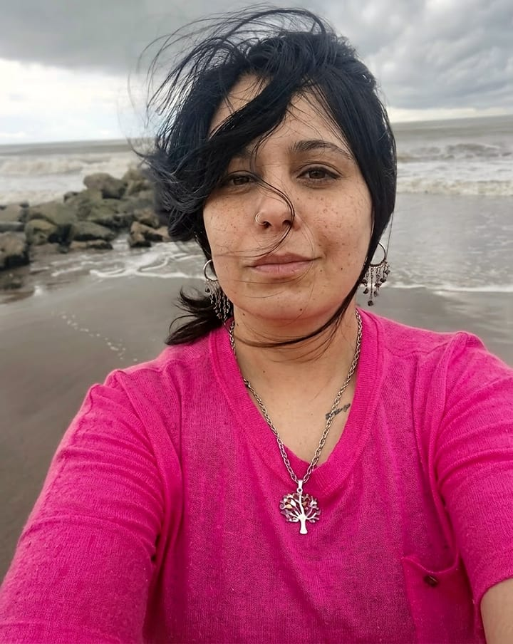
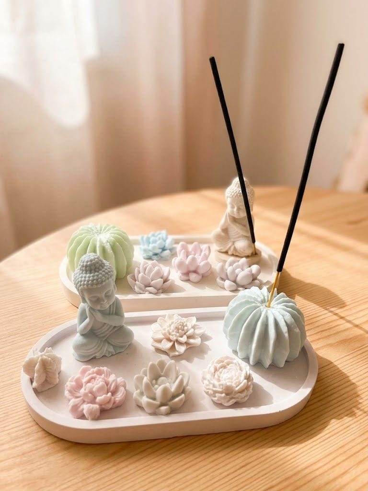
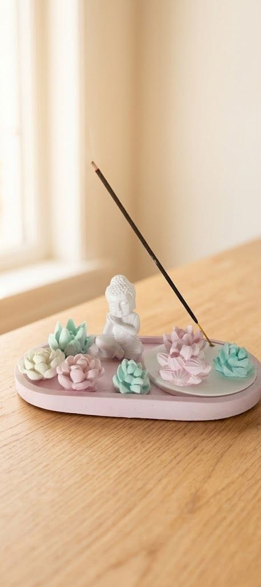

Nuestra historia
El hilo que me trajo hasta acá

Siempre quise hacer velas. Hasta que una mañana me levanté y me dije: voy a probar.
Con el yeso me pasó lo mismo: jamás en mi vida lo había trabajado. Y me encantó. Se volvió algo placentero, casi terapéutico, algo que me hace feliz.


Cuando llegó el momento de ponerle nombre, quería uno literario. Pensé en algún mito, y apareció el hilo de Ariadna: el que le dio a Teseo para que pudiera salir del laberinto con vida. Lo crucé con otro hilo, el hilo rojo, ese que dicen que te ata a un amor y que no se rompe ni se corta.
Así nació Hilo Rojo. Este puede ser mi gran amor: hacer artesanías.
Yanina Hourcade